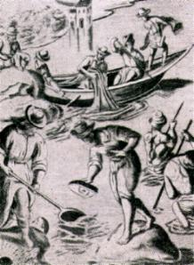
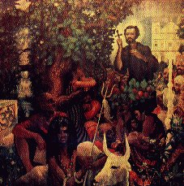
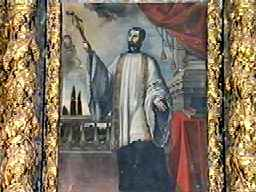
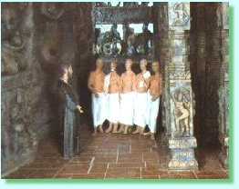
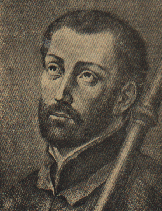
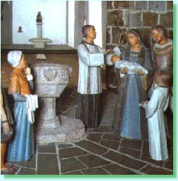

Um dia lhe disseram que havia uma ilha
chamada Pescaria, onde viviam aproximadamente
20.000 pessoas
batizadas, mas totalmente ignorantes de DEUS, porque não havia um sacerdote
que soubesse o idioma do povo para evangelizá-lo. Xavier viajou para lá em Outubro
de 1542, passando por Cochin, onde os franciscanos tinham um Convento e um
Seminário Missionário. Como sempre, eles o receberam muito cordialmente. Pescaria
estava a 900 quilômetros de Goa e a 100 quilômetros de Tuticorín. O lugarejo era
pobre e com imensos bancos de areia marinho, que impediam as embarcações
maiores de se aproximarem do cais. O Santo levou três jovens indígenas do Colégio
de São Paulo como tradutores. Os jovens traduziram para o idioma local,
“malavar”, o Credo, os
Mandamentos e diversas Orações. O povo da região se alimentava com o pescado,
arroz, tâmaras e o líquido dos cocos (a saborosa água de coco). Era uma alimentação
pouco nutritiva. Não podiam comer carne de boi, porque segundo a crença malavar,
era um grave pecado. Viviam em palhoças de barro e pau a pique, cobertas com folhas
de palmeiras. Tinham conformação atlética e esbelta, com traços europeus. Sua crença
também ensinava que quando um morria, a alma passava para um cachorro, ou uma
serpente, ou para outro animal, de acordo com o seu merecimento, ou seja, de acordo
com o comportamento em vida, se tinha sido bom ou mal. O Santo com muita habilidade
e paciência, foi instruindo aquela gente, eliminando as superstições e lhes ensinando
a doutrina Divina. Visitava todos os povoados. Silencioso caminhava através das areias
pantanosas de aldeia em aldeia. No verão, a areia aquecia tanto que queimava os pés.
Também quando soprava um vento forte das montanhas, levantava nuvens de pó que
cobriam tudo e com uma força tão sufocante, que tentava entrar pela boca e nariz das
pessoas, impedindo a respiração normal. Xavier caminhava com os pés queimados
e as pernas inchadas. Dizia ele: “Sólo por
DIOS se pueden tolerar tales trabajos... Yo no cargaría con ellos ni un solo día por
todo el mundo.” (Só por DEUS se pode tolerar tais
trabalhos... Eu não os realizaria nem um único dia pelas coisas do mundo).
Na região cultivavam ostras e delas se
extraíam perolas preciosas legítimas, que atraía um notável comércio. Mas os
pescadores nada sabiam sobre religião. Em sua maioria eram pagãos e
adoravam os ídolos que encontravam pelo caminho, nos bosques ou nos templos.
Eram estátuas de argila, representando animais: cavalos, macacos, elefantes
barrigudos e outros, pintados de branco, preto e vermelho, untados com óleo de
coco.
Por outro lado, os malavares viviam cansados e exasperados contra o terrível

jugo dos maometanos que os tiranizavam e matavam sem piedade.
Por isso tinham medo que viesse ocorrer algum tipo de represália se os muçulmanos
soubessem que eles estavam acolhendo os missionários. Mesmo assim, decidiram
serem batizados transformando-se em cristãos, para que os portugueses os
defendessem. Em troca, eles pagavam ao Rei de Portugal o tributo sobre as
pérolas que vendiam.
Xavier era chamado em todas as partes
para visitar os enfermos e rezar por eles. Como não podia estar ao mesmo tempo em
diversos lugares e não querendo que nenhuma pessoa ficasse sem conhecer o amor
de DEUS, pediu que as crianças o ajudassem. Ele escreveu: "Em cada dia nasce e cresce nas pessoas um desejo de DEUS e eu tinha todo
o interesse em satisfazer o maior número possível dessa gente, não só pela alegria
fraterna de servir, mas sobretudo com receio de que uma recusa de minha parte,
enfraquecesse a confiança que eles depositavam na ajuda da religião. Por isso,
decidi enviar as crianças para os diferentes bairros, a fim de poder atender a todos
que buscavam auxílio."
As crianças devidamente instruídas, partiam para todos os lados,
incumbidas por Padre Xavier para realizar as diferentes missões: tocar num doente
com o rosário, aspergir água benta sobre os enfermos e idosos, e ensinar-lhes a rezar
presenteando-lhes com uma oração escrita num papel. Quando voltavam das missões que
lhe eram confiadas, as crianças mostravam-se tão felizes que até batiam palmas como
manifestação de alegria, porque tinham sido verdadeiramente pequenos apóstolos
de JESUS.
MILAGRES DE DEUS
PELA INTERCESSÃO DE XAVIER
Chegou a uma aldeia pagã
e perguntou: “Por 
qué no sois cristianos?” (Porque não são cristãos?)
Responderam-lhe que o rei lhes proibia. Informado que uma mulher estava quase
morta, foi a sua cabana. Um dos jovens que trouxe de Goa conversou com a mulher
e lhe ensinou os princípios da religião em seu idioma. Depois lhe perguntou se
ela queria ser cristã. Diante da resposta afirmativa da mulher, Xavier a batizou
e ela ficou curada instantaneamente. Toda a família dela se converteu. A notícia
espalhou ligeiro. O rei, diante daquela realidade, autorizou que se tornassem
cristãos todos que espontaneamente desejassem. Em outra cabana acontecia o velório
de um menino que tinha morrido afogado num poço. O Santo chegou, ajoelhou ao lado
dele, rezou e depois fez sobre a criança o sinal da cruz, dizendo: “En nombre de JESUCRISTO te mando que te levantes vivo.”
(Em nome de JESUS CRISTO ordeno que levantes vivo).
O menino levantou-se diante do espanto de todos e Xavier entregou-o a sua mãe.
ASSASSINATO DE CRISTÃOS
Ao regressar a Goa, soube que o rei do
Ceilão havia mandado degolar 600 cristãos. Aborrecido, levou a notícia ao
Governador a fim de que fossem agilizadas providências contra aquela barbaridade.
Entretanto, apesar de ter prometido, na sequência dos dias o Governador não fez
nada de concreto. Xavier 
então escreveu uma carta
ao Rei de Portugal, mas ao invés
de acusar diretamente o rei do Ceilão pelo abominável crime, o Santo passou a
elogiar o Rei de Portugal, discorrendo sobre as determinações piedosas
e caritativas que o monarca tinha feito:
“Quando Vossa Excelência envia os missionários, recomenda aos governadores que
os ajudem e lhes dêem dinheiro para construir Igrejas, assim como pagar aqueles
que ensinam o catecismo, porque aquelas pessoas se dedicam a religião e ajudam
os sacerdotes. Por estes motivos e muitos outros, o nome do Rei de Portugal é
sempre lembrado por todos com muito carinho e gratidão. Por outro lado, lembrando
que os índios pagam o tributo a Portugal do artesanato que produzem, peço que lhes
escreva autorizando-lhes deixar esse tributo na própria comunidade, para pagar
aqueles que ensinam o catecismo. E peço também a Vossa Excelência que escreva
ao rei do Ceilão que diz ser amigo dos portugueses, para que ele não mate os
cristãos, porque eles são filhos de DEUS.”
Passado algum tempo, observando que
nenhuma providência foi agilizada, Xavier foi para o Ceilão e Manar e lá permaneceu
de 1544 a 1545, período em que converteu muitas pessoas ao cristianismo. Mas o
castigo contra o rei do Ceilão não aconteceu.
EM SÃO TOMÉ
O Santo em dúvida se devia viajar ou não
para Málaca, decidiu seguir para São
Tomé, onde havia um grande
Santuário dedicado ao Apóstolo São Tomé. Lá ele se hospedou na casa do Vigário
do Santuário. No dia seguinte, quando celebrava a Santa Missa, as pessoas observaram
que ele entrou em êxtase e elevou-se do solo. Em uma outra noite, quando rezava no
Santuário, diversas pessoas ouviram como os demônios o fustigavam. Xavier converteu
muitos portugueses e índios. E foi então, através da oração que o ESPÍRITO
SANTO iluminou sua mente e ele compreendeu que devia ir a Málaca. Na despedida,
o Vigário do Santuário lhe deu uma relíquia de São Tomé que cuidadosamente
ele guardou numa caixinha que levava dependurada ao pescoço, onde estavam duas
assinaturas de São Ignácio recortadas de cartas e a fórmula dos votos que
eles, os primeiros jesuítas fizeram em Montmartre. Durante três meses
permaneceu em São Tomé e desfrutou de experiências espirituais próprias
dos grandes místicos.
São impressionantes as distâncias que
Padre Francisco Xavier percorreu na 
Índia, no Japão e outras nações.
Viajando a pé e levando somente o livro de orações como bagagem, ensinando,
atendendo os enfermos, intercedendo junto a DEUS e alcançando curas admiráveis,
batizando centenas e milhares de pessoas, aprendendo idiomas estranhos, e tudo
com a melhor disposição sem revelar cansaço. Durante a noite, depois de passar
todo o dia evangelizando e atendendo as pessoas que buscavam auxílio, aproximava-se
do altar e de joelhos, pedia a DEUS a salvação daquelas almas que lhe havia procurado.
Quando cansado chegava o sono, deitava ali mesmo junto ao sacrário e depois de
dormir um pouco, seguia com sua oração. De vez em quando exclamava: “Basta SENHOR, se me mandas tantos consolos vou
acabar morrendo de amor.” Com razão, a sua palavra tinha
um efeito fulminante para converter os corações. Porque na verdade, o amor e a
bondade de Xavier estavam na presença do CRIADOR precedidos de muitas orações
e acompanhados de severos e vigorosos sacrifícios que ele fazia em benefício dos
necessitados. Às vezes ele estava cansado de tanto batizar que a noite não era capaz
nem de levantar a sua mão direita. O povo o considerava um verdadeiro Santo e
levava os doentes para serem benzidos, onde ele estivesse .

Próxima Página
Página Anterior
Retorna ao Índice